Workshop Manual ➭ TRANSMISSION/TRANSAXLE ➭ AUTOMATIC TRANSMISSION[SJ6A-EL] ➭ AUTOMATIC TRANSMISSION REMOVAL/INSTALLATION [SJ6A-EL]
AUTOMATIC TRANSMISSION REMOVAL/INSTALLATION [SJ6A-EL]
id051311249200
{: #wp1058566}
-
Remove the battery cover.
-
Disconnect the negative battery cable. (See BATTERY REMOVAL/INSTALLATION [L8, LF].)
-
Drain the ATF. (See AUTOMATIC TRANSMISSION FLUID (ATF) REPLACEMENT [SJ6A-EL].)
-
Loosen the starter installation bolts only enough that the starter is loose, but not removed. (See STARTER REMOVAL/INSTALLATION [L8, LF].)
-
Remove in the order indicated in the table.
-
Install in the reverse order of removal.
-
Add ATF and, with the engine idling, inspect the ATF level and inspect for leakage. (See AUTOMATIC TRANSMISSION FLUID (ATF) LEVEL ADJUSTMENT [SJ6A-EL].)
-
Inspect selector lever operation. (See SELECTOR LEVER INSPECTION.)
-
Inspect for leakage of ATF from all connecting points.
-
Perform the mechanical system test. (See MECHANICAL SYSTEM TEST [SJ6A-EL].)
|
Test item {: #wp1058825} |
|||
|---|---|---|---|
|
Line pressure test {: #wp1058907} |
Stall speed test {: #wp1058910} |
Time lag test {: #wp1058913} |
|
|
Automatic transmission replacement {: #wp1058717} |
× {: #wp1058719} |
||
|
Control valve body replacement {: #wp1058852} |
× {: #wp1058855} |
× {: #wp1058858} |
× {: #wp1058861} |
|
Torque converter replacement {: #wp1058865} |
× {: #wp1058868} |
× {: #wp1058871} |
|
- Perform the road test. (See ROAD TEST [SJ6A-EL].)
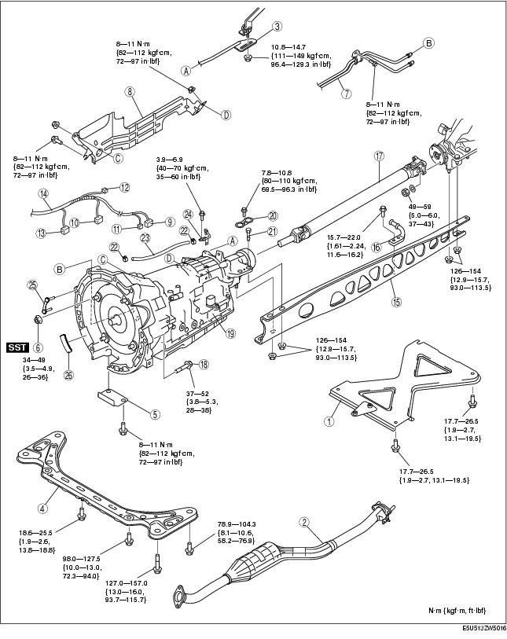
.
|
Tunnel member component {: #wp1059052} |
|
|---|---|
|
2 {: #wp1059076} |
Middle pipe {: #wp1059079} (See EXHAUST SYSTEM REMOVAL/INSTALLATION [L8, LF].) {: #wp1059112} |
|
3 {: #wp1059083} |
Manual shaft lever component {: #wp1059086} (See Manual Shaft Lever Component Removal Note.) {: #wp1059136} (See Manual Shaft Lever Component Installation Note.) {: #wp1059150} |
|
4 {: #wp1059162} |
Transverse member {: #wp1059165} |
|
5 {: #wp1059185} |
Under cover {: #wp1059188} |
|
6 {: #wp1059208} |
Torque converter installation nuts {: #wp1059211} (See Torque Converter Installation Nuts Removal Note.) {: #wp1059233} (See Torque Converter Installation Nuts Installation Note.) {: #wp1059247} |
|
7 {: #wp1059259} |
Oil pipe, oil hose {: #wp1059262} (See OIL COOLER REMOVAL/INSTALLATION [SJ6A-EL].) {: #wp1059288} |
|
8 {: #wp1059300} |
Insulator {: #wp1059303} |
|
9 {: #wp1059329} |
TR switch connector {: #wp1059332} |
|
10 {: #wp1059358} |
Solenoid valve connector {: #wp1059361} |
|
11 {: #wp1059387} |
VSS connector {: #wp1059390} |
|
12 {: #wp1059416} |
Turbine sensor connector {: #wp1059419} |
|
13 {: #wp1059445} |
Oil pressure switch connector (for oil filter) {: #wp1059448} |
|
14 {: #wp1059474} |
Wiring harness {: #wp1059477} |
|
15 {: #wp1059503} |
Power plant frame {: #wp1059506} (See Power Plant Frame Removal Note.) {: #wp1059534} (See Power Plant Frame Installation Note.) {: #wp1059548} |
|
16 {: #wp1059560} |
Hanger bracket {: #wp1059563} |
|
17 {: #wp1059593} |
Propeller shaft {: #wp1059596} (See Propeller Shaft Removal Note.) {: #wp1059628} (See PROPELLER SHAFT REMOVAL/INSTALLATION.) {: #wp1059642} |
|
18 {: #wp1059654} |
Transmission installation bolt and nut {: #wp1059657} |
|
19 {: #wp1059691} |
Transmission {: #wp1059694} (See Transmission Removal Note.) {: #wp1059730} (See Transmission Installation Note.) {: #wp1059744} |
|
20 {: #wp1059756} |
Stopper {: #wp1059759} |
|
21 {: #wp1059797} |
Bolt {: #wp1059800} |
|
22 {: #wp1059838} |
Hose clamp {: #wp1059841} |
|
23 {: #wp1059879} |
Breather hose {: #wp1059882} |
|
24 {: #wp1059920} |
Breather tube {: #wp1059923} |
|
25 {: #wp1059961} |
Stiffener {: #wp1059964} |
|
26 {: #wp1060002} |
Side cover {: #wp1060005} |
Manual Shaft Lever Component Removal Note
- Mark the manual shaft lever component as shown in the figure.{: #wp1060103}
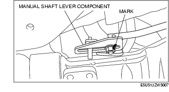
- Remove the manual shaft lever component installation nut.
Torque Converter Installation Nuts Removal Note
-
Lock the drive plate using a flathead screwdriver as shown in the figure.
-
Remove the torque converter installation nuts using a SST.{: #wp1060184}
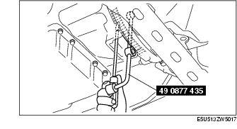
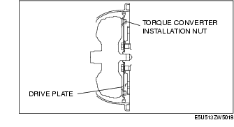
Power Plant Frame Removal Note
- Support the transmission using a transmission jack.{: #wp1060257}
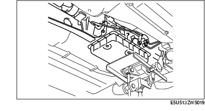
- Remove the power plant frame.
Propeller Shaft Removal Note
- Install the SST to the output shaft.{: #wp1060304}
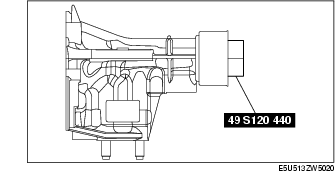
- Insert a slab of wood behind the differential and remove the propeller shaft.{: #wp1060340}
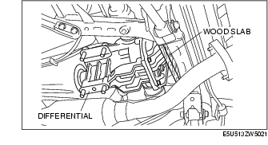
Transmission Removal Note
Warning
• Verify that the transmission is securely supported by the jack. If the transmission falls, serious injury or death and damage to the vehicle could result. Before removing the transmission make sure that the jack is securely supporting the transmission.
Caution
• To prevent the torque converter and transmission from separating, remove the transmission without tilting it toward the torque converter.
- Support the transmission securely using a transmission jack.{: #wp1060423}
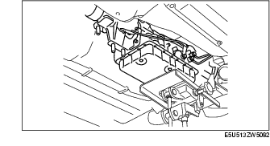
- Remove the transmission installation bolt.
Transmission Installation Note
Warning
• Verify that the transmission is securely supported by the jack. If the transmission falls, serious injury or death and damage to the vehicle could result. Before removing the transmission make sure that the jack is securely supporting the transmission.
Caution
• To prevent the torque converter and transmission from separating, remove the transmission without tilting it toward the torque converter
- Support the transmission securely using a transmission jack.{: #wp1060506}

- Tighten the transmission installation bolts and nuts.{: #wp1060533}
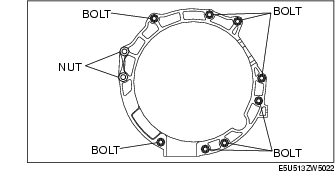
Tightening torque
37-52 N·m {3.8-5.3 kgf·m, 28-38 ft·lbf}
Power Plant Frame Installation Note
- Support the transmission and differential so that they are level using a transmission jack.{: #wp1060613}
-
Install the power plant frame.
-
Temporarily tighten the nuts 1, 2, 3 in order shown in the figure.{: #wp1060650}
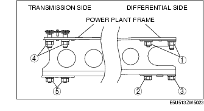
-
Tighten nut 2 until the power plant frame is seated in the rear differential.
-
Temporarily tighten the nuts 4, 5 in order shown in the figure.
-
Install the middle pipe and tunnel member.
-
Raise the front end of the power plant frame (transmission side) or the transmission with the transmission jack, and adjust dimension A to 26.7-34.7 mm {1.06-1.36 in} (lower surface of power plant frame-upper surface of the tunnel member) as shown in the figure.{: #wp1060707}
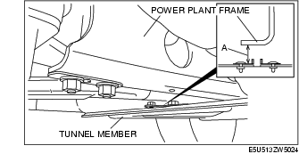
- Tighten the power plant frame installation nuts.
Tightening torque
126-154 N·m {12.9-15.7 kgf·m, 93.0-113.5 ft·lbf}
- Verify that dimension A is within the specification with the transmission jack and the adjustment bolt removed.
• If not within the specification, adjust dimension A again.
Torque Converter Installation Nuts Installation Note
-
Align the holes by turning the torque converter.
-
Lock the drive plate using a flathead screwdriver.
Caution
• Loosely and equally tighten the torque converter nuts, then further tighten them to the specified tightening torque.
- Tighten the torque converter installation nuts.{: #wp1060885}
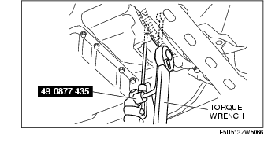
Tightening torque
34-49 N·m {3.5-4.9 kgf·m, 26-36 ft·lbf}
Manual Shaft Lever Component Installation Note
- Align the mark of the manual shaft lever component as shown in the figure.{: #wp1060955}
- Install the manual shaft lever component installation nut.
Tightening torque
10.8-14.7 N·m {111-149 kgf·cm, 96.4-129.3 in·lbf}